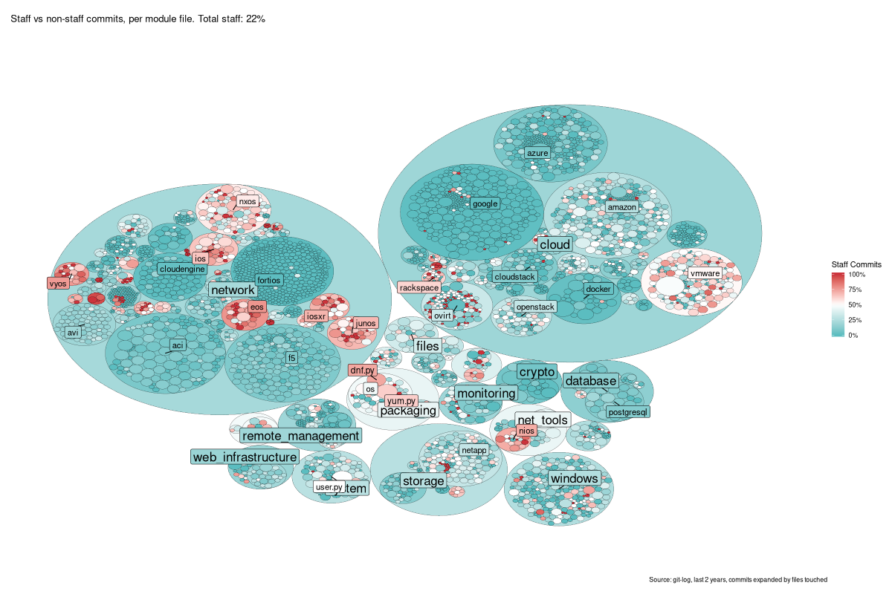
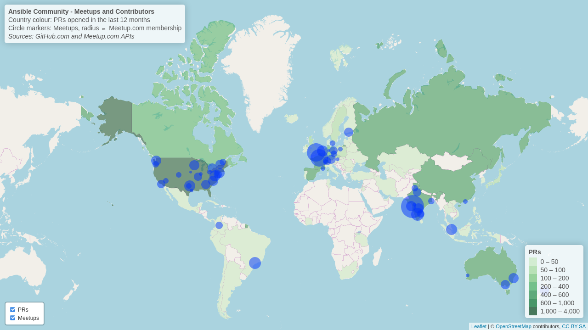

Contributing to Ansible
docs.ansible.com/ansible/devel/community
https://ansible.github.io/community/decks/ - press "s" for speaker notes
Who am I?
- name: John Barker
aliases: gundalow
title: Associate Manager
org: Ansible Community Team, Red Hat
start_date: 2016
roles:
- community
- manager
freenode: gundalow
github: gundalow
twitter: the_gundalow
email: gundalow@redhat.com
THE ANSIBLE COMMUNITY
The humans who get involved, even once, make us stronger
We will cover:
- Scale and skill set - what you can bring
- Opportunities to help
- Issue & PR workflow
- How to review PRs
- How to join the conversation and shape the future
Myth #1: I can’t contribute because I’m not a programmer.
- Can’t code (in Python)? No problem!
- Module docs are YAML - You know YAML.
- Testing a change doesn't (necessarily) require you to understand how it works.
- Anyone can confirm bug reports & fixes.
Myth #2: I'm brand new to Ansible, I can't contribute.
- Think you have no knowledge to share? Think again!
- New users can tell us how well the documentation is working.
- Provide feedback test, review, report bugs.
- If you’re new to Ansible, you have fresh eyes - keep us honest.
Myth #3: I don't know Git or GitHub, I can't contribute.
- Scared of source control? Fear not!
- On docs.ansible.com, use "Edit on GitHub".
- This lets you edit directly from GitHub.com - demo later.
- Worst case you make a mess of your PR - Ansibullbot will guide you.
Myth #4: Writing tests is difficult.
- Integration tests for Ansible are just Playbooks.
- Extending a test case is generally fairly straightforward.
- Testing gives us confidence to merge PRs, helps stop regressions.
Myth #5: I need to make a commitment
one contribution and I'm stuck with support forever.
- Drive-by contributions are welcome!
- Fix a bug.
- Add a test case.
- Clarify documentation.
- When adding new modules we do look for some ongoing support.
Myths: Proof
Scaling: The power of Community
- Together, we make Ansible awesome.
- Some of us know very little.
- Some of us know lots of things.
- Collectively we know everything.
- Ansible is an ecosystem, and every developer and user has a part to play.
- Getting involved allows you to set direction.
Scaling: The power of Community
{kind=link}
Scaling: The power of Community
{kind=link}
Scaling: The power of Community
Community is the force multiplier.
You are the community.
Collections
Collections
- Monorepo (github/ansible/ansible) -> ansible-base + independent collections
- Can be released independently of ansible-base and Ansible
- Own (GitHub, GitLab, etc) repository
- Dedicated backlog, no more shared massive issue & PR backlog
- Should still have CI testing and in many cases can be tested more thoroughly
Collections: Community
github.com/ansible-collections| aws | awx | azure |
| crypto | digitalocean | general |
| grafana | kubernetes | libvirt |
| mongodb | mysql | netcommon |
| network | posix | proxysql |
| rabbitmq | skydive | vmware |
| windows | zabbix |
- Dedicated repository
- Own Working Group
List of collections
Other collections included inansible 2.10:| amazon.aws | ansible.netcommon | ansible.posix |
| ansible.windows | arista.eos | awx.awx |
| azure.azcollection | check_point.mgmt | chocolatey.chocolatey |
| cisco.* | cloudscale_ch.cloud | cyberark.* |
| dellemc.os* | f5networks.f5_modules | fortinet.* |
| frr.frr | gluster.gluster | google.cloud |
| hetzner.hcloud | ibm.qradar | infinidat.infinibox |
| junipernetworks.junos | mellanox.onyx | netapp.* |
| netbox.netbox | ngine_io.* | openstack.cloud |
| openvswitch.openvswitch | ovirt.ovirt | purestorage.* |
| servicenow.servicenow | splunk.es | theforeman.foreman |
| vyos.vyos | wti.remote |
Demo
github.com/ansible-collectionsgithub.com/ansible-collections/community.mysql
github.com/ansible-collections/community.general
Pause for questions
GitHub Issues and PRs
GitHub Issues and PRs
- GitHub Issues/PRs . . . or it never happened.
- Issues
- Issues capture bug reports and feature ideas.
- Use for details and discussion before implementation begins.
- Remember that users often find issues when troubleshooting - include error messages and workarounds.
- Pull Requests (PRs)
- PRs contain actual changes.
- Create a feature branch for each change.
- Improve a one thing: Fix a bug or add a feature.
- If you know the fix, no need to create an issue, just create a PR.
- GitHub resources: lab.github.com, guides.github.com
Ansible's Development Process
- Triage
- Cycle: Fix tests, get reviews, address review comments
- Merged
- Backport bug fixes [optional]
Development Process: PR Life Cycle Demo
Pause for questions
Development Process: Aims of reviews
- Anyone can review PRs.
- User feedback from everybody.
- Community reviews give us confidence to merge community code.
- Working groups & Big PR Review days
- PR backlog keeps growing due to lack of reviews.
Development Process: Types of review
Whatever your skill set, you can help with at least one of these:
- Documentation reviews
- Functional reviews
- Code reviews
Reviews #1: Functional Reviews
- Does the change work?
- Address a use case you have?
- Break any edge case or use case you have?
- Is the interface clear?
Reviews #2: Documentation Reviews
- Are the docs clear?
- Do the examples work?
- Is there any ambiguity?
- Is there any missing knowledge?
- Feedback on docs from newer users is really important!
Reviews #3: Code Reviews
- Does the code honor Ansible's coding guidelines?
- Does the code make the best use of existing APIs?
- Does it follow the "the Ansible way" (variable names, etc.)?
- Does it follow the CRUD principles (Create, Read, Update, Delete)?
Development Process: How to review
- Three part review:
- Is the idea behind the contribution sound?
- Is the contribution architected correctly?
- Is the contribution polished?
- Be mindful:
- Go above and beyond to promote a collaborative and respectful community.
- Avoid bikeshedding. Ansible's coding guidelines are already enforced by CI.
- Make comments that invite discussion, not argument: "Would this be clearer if...?"
Working Groups: List
- github.com/ansible-collections: Every repo is a WG
- Cross functional: Community, Core, Documentation, Testing
- Cloud Providers and VMs: AWS, Azure, Docker, Linode, VMware
- Network
- Operating Systems: AIX, BSD, HP-UX, Linux, Solaris, Windows
- Related projects: ansible-lint, AWX (Tower), Galaxy, Molecule
- Plus many more...
- Full list: github.com/ansible/community/wiki
Working Groups: Purpose
Are you willing to help advance the thing that is obviously stuck and needs people united in order to get unstuck? Working groups:
- Empower users.
- Help build communities.
- Focus effort on a specific topic.
- Allow people closer to the technology to set direction.
- Make Ansible do what you want, solve your challenges.
Working Groups: How?
- Require a mix of skill sets.
- No regular commitment required.
- May be spread across the globe.
- Communicate via GitHub Issues/PRs/Wiki.
- May also have a dedicated IRC channel.
- May even have IRC Meetings (recorded).
- New Working Groups welcome! I can help you set one up.
Call to action!
- Get involved with a working group: github.com/ansible-collections
- Subscribe to The Bullhorn, The Ansible Community newsletter
- Big PR Review Days: github.com/ansible/community/issues/407
- Virtual Meetups: ansible.meetup.com
- Contact us for feedback, help, mentoring: gundalow@redhat.com
Thank You!
- Get involved with a working group: github.com/ansible-collections
- Subscribe to The Bullhorn, The Ansible Community newsletter
- Big PR Review Days: github.com/ansible/community/issues/407
- Virtual Meetups: ansible.meetup.com
- Contact us for feedback, help, mentoring: gundalow@redhat.com